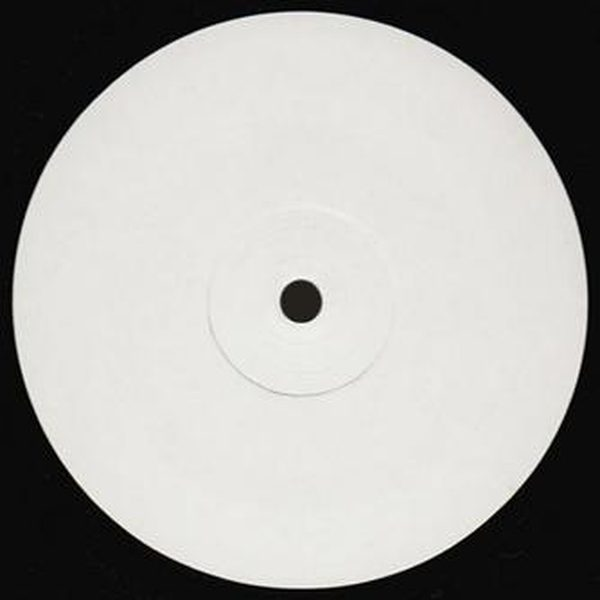

I 18 dischi
 1
BalloBiscits
1
BalloBiscits
 2
Deep CutÖwnboss, Emad
2
Deep CutÖwnboss, Emad
 3
DEEP TIDES (SAINTPAUL DJ PRIVATE REEDIT)Sidekick vs Beanfield
3
DEEP TIDES (SAINTPAUL DJ PRIVATE REEDIT)Sidekick vs Beanfield
 4
Pump (AC Slater Remix)Chris Lorenzo
4
Pump (AC Slater Remix)Chris Lorenzo
 5
La TrompetaGabry Sangineto, Roby Arduini, Pagany
5
La TrompetaGabry Sangineto, Roby Arduini, Pagany

6 One More Time (RetroVision Flip)Daft Punk 7
Uno DosBotteghi, Alex Nocera
7
Uno DosBotteghi, Alex Nocera
 8
Get LowMarten Hørger x Crüpo x Swen Weber ft. Stush
8
Get LowMarten Hørger x Crüpo x Swen Weber ft. Stush
 9
Make LuvMorganJ, FWN
9
Make LuvMorganJ, FWN
 10
Hit It Pump ItBingo Players
10
Hit It Pump ItBingo Players
 11
I Like ItAlesso & Nate Smith
11
I Like ItAlesso & Nate Smith
 12
Baiana 2024Dario Nunez & Javi Colina
12
Baiana 2024Dario Nunez & Javi Colina
 13
The OceanAVALAN ROKSTON & ARTBAT
13
The OceanAVALAN ROKSTON & ARTBAT
 14
Make The Sound BoomAlex Pizzuti
14
Make The Sound BoomAlex Pizzuti
 15
Could You Be LovedDubdogz, Mojjo
15
Could You Be LovedDubdogz, Mojjo
 16
I Need Somebody Who Needs MeSAMUELE SARTINI, ECHOES OF SOUND, JORDAN GRACE
16
I Need Somebody Who Needs MeSAMUELE SARTINI, ECHOES OF SOUND, JORDAN GRACE
 17
EverythingNEWER
17
EverythingNEWER
 18
So DifferentPickle & TOYZZ
18
So DifferentPickle & TOYZZ
La tracklist
- 1 Ballo Biscits WRONG
- 2 Deep Cut Öwnboss, Emad Smash The House
- 3 DEEP TIDES (SAINTPAUL DJ PRIVATE REEDIT) Sidekick vs Beanfield Mashup
- 4 Pump (AC Slater Remix) Chris Lorenzo Late Checkout
- 5 La Trompeta Gabry Sangineto, Roby Arduini, Pagany BEAT Music Fund
- 6 One More Time (RetroVision Flip) Daft Punk White Label
- 7 Uno Dos Botteghi, Alex Nocera S2 Records
- 8 Get Low Marten Hørger x Crüpo x Swen Weber ft. Stush Crash Your Sound
- 9 Make Luv MorganJ, FWN Hexagon
- 10 Hit It Pump It Bingo Players Hysteria Records
- 11 I Like It Alesso & Nate Smith RCA Records Label Nashville
- 12 Baiana 2024 Dario Nunez & Javi Colina SOLEADO RECORDINGS
- 13 The Ocean AVALAN ROKSTON & ARTBAT Island Berlin
- 14 Make The Sound Boom Alex Pizzuti Hexagon
- 15 Could You Be Loved Dubdogz, Mojjo Spinnin' Records
- 16 I Need Somebody Who Needs Me SAMUELE SARTINI, ECHOES OF SOUND, JORDAN GRACE Rise Records
- 17 Everything NEWER X-RAID
- 18 So Different Pickle & TOYZZ Musical Freedom